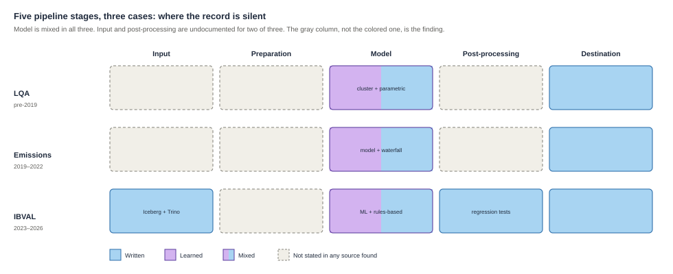
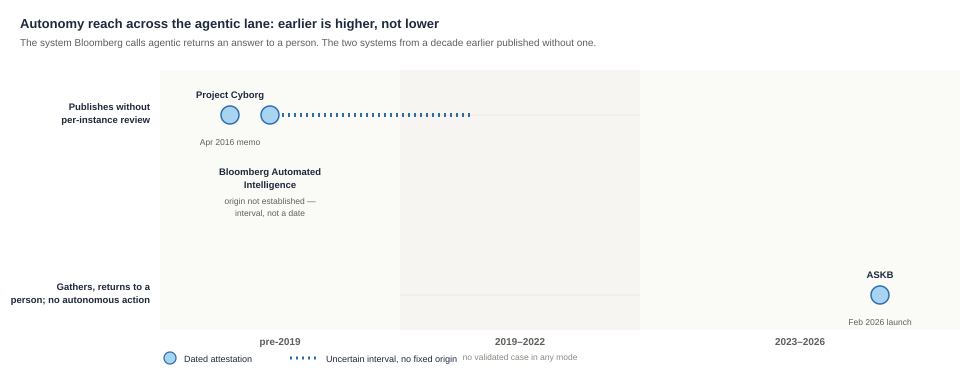

Predictive: systems that produce a number
Nothing forces anyone to say in advance what a right answer would look like, and nothing forces anyone to check the estimate against what happened next. Jean-Philippe Bouchaud, of the quantitative fund Capital Fund Management, made a version of that point to a trade reporter writing about machine learning for market impact in general. He named no Bloomberg system, and his answer turned on how much data exists to check a method against rather than on the method itself. At low frequencies, he said, data is too limited to avoid misleading results, oversampling, overfitting or to gain new insights, and "all the nonlinear effects machine learning has found at low frequencies we have already found using more traditional data analysis methods or intuition." At the high-frequency scale of a few seconds or a few minutes, by contrast, "there's typically enough data that a sort of automated search for correlation, which machine learning is providing, can work."
The three systems below sit at different points on that scale: a liquidation cost realized only if someone sells, a company's emissions disclosed only once a year if at all, a bond price that updates every fifteen seconds. The last of those is close to the frequency Bouchaud calls defensible. The record does not say whether that speed was ever put to a test resembling the one he describes, or only to the test of arriving quickly.
LQA — March 2016
The first model needed an older formula added
Bloomberg's first attempt at a liquidity model ran into trouble, and the account of that comes from a trade magazine. Risk.net, in an April 2017 feature on machine learning for market impact, reported on the method Bloomberg tried first — grouping similar bonds together and pricing an untraded one off its neighbors, a method called cluster analysis: "Initially, Bloomberg had tried cluster analysis by itself, running a linear regression model on the clusters to produce expected costs. But this did not provide the results it had hoped for. Clustering alone can result in instabilities, where a small change in the underlying data causes large unexpected changes in cluster composition." The instability is stated by Risk.net as a general property of clustering. Bloomberg's case is the illustration that follows it.
Bloomberg's next step, per the same feature, was to bring in something older. "Instead, the company learned it needed to incorporate a parametric model to introduce stability" — a hand-specified market-impact formula, its shape written by an analyst rather than learned, with its parameters fitted to the pooled data. Naz Quadri, then head of quant engineering and research at Bloomberg Enterprise Solutions, in the same feature: "Our research suggests clustering is most useful, and results are more stable, when it is used with a structural market impact model." This account of the first attempt comes from Risk.net's reporting. No Bloomberg-authored document found for the case gives its own version.
The product is LQA, the Liquidity Assessment Tool, announced on 9 March 2016. It estimates what it would cost to sell a stated quantity of a bond, and how long that would take. The problem it addresses is that most bonds barely trade, so there is nothing recent to price against. Bloomberg's own March 2016 client deck states the mechanism in three lines under "Machine Learning Engine": "Problem : A lack of trade data gives < 100% coverage / Solution : Cluster Analysis is used to identify comparable assets."
As set out in the introduction, every bond is measured against a handful of things known about it — currency, duration, time to maturity, amount outstanding — and those measurements, known as its features, place it near some bonds and far from others. The 2017 feature goes further than that, and describes what happens to the nearby bonds once they have been found. The sorting runs in two stages: bonds are first put into "broad, intuitively similar buckets," and cluster analysis then "collect[s] together the most comparable products in each bucket." The neighbors are not themselves the answer. Risk.net's worked example is a trade of 500 lots of an obscure US Treasury bond: LQA identifies the other US Treasury bonds nearest to it in that space, and "will then use their combined pool of data to calibrate the parametric model." What the clustering produces is a body of data large enough to fit a formula to.
So the trained component finds the data, and the rule-based component estimates the cost. Reiter's recommendation for data-to-text systems is structurally the same move. Do the analytics and insight creation outside the model, then hand those insights to the model as input. He states the reason as capability rather than checkability — large language models "are poor at signal analysis and data interpretation, and it is a mistake to expect them to do these tasks." The record does not say Bloomberg chose the arrangement for that reason. The reason Quadri gives is stability.

LQA emits a liquidation cost and a horizon, a liquidity score, and, by the December 2019 fact sheet, regulatory classifications. The classifications are where a continuous estimate stops being one. Bloomberg's 2021 brochure for the Japanese guidelines lists the buckets: highly liquid under three business days, medium four to seven, low over eight, non-liquid over eight "with significant market impact." Those boundaries are the regulator's. The word "significant" is not. Bloomberg supplies a default — half the bid-ask spread, the difference between a bond's buy price and its sell price, with the cost measured from the mid-point between them — and the brochure says it "can be fully customized to reflect the fund manager's determination of a 'significant' market impact."
LQA is the one case in this section where Harrell's objection to classification is visible on the page, and where the ownership of the decision is written down. The cut points belong to the regulator, the discretionary term belongs to the fund manager, and Bloomberg ships a default that can be overridden. The record does not say what that default figure was calibrated against.
The corporate emissions model — July 2021
Only 2.27 percent of filers disclose emissions
Corporate emissions disclosure is voluntary, and almost nobody does it. The four authors of the July 2021 workshop paper, three at Bloomberg Quant Research and one who had done the work there, put the figure at "merely 2.27% of companies filing financial statements are disclosing their GHG emissions according to our Environmental, Social and Governance (ESG) datasets." The set of examples where the answer is already known — the labeled dataset, the companies that do disclose — is 24,052 annual emissions figures from 3,960 companies. The set they need to predict for, the unlabeled dataset, is 619,703 records from 61,467 companies.
The harder problem is that those two sets do not look alike. Companies that disclose emissions tend to disclose everything else too. The paper's example, in its own wording: "energy consumption is disclosed by 97% companies in the labeled dataset while by only 20% companies in the unlabeled dataset." Almost every disclosing company reports its energy use. Only one in five of the rest does. The model has over a thousand measurements available to look at — the paper calls them features — and 525 of them are missing more than ninety percent of the time. A model trained on the training data of disclosing companies learns to lean on fields the non-disclosing companies do not have.
The paper's answer is to break the training data on purpose. "We augment the training data with a masked dataset that is created by applying the feature missing patterns of the unlabeled data to the original labeled data." They call it Patterned Dropout, and the masker itself is not written by hand but trained from examples in turn, fitted to reproduce realistic patterns of missing data. This is a training-time device. It makes the disclosing companies look, to the model, like the non-disclosing ones it will actually be asked about. The paper is then explicit about which score counts, and about why: "performance on the masked data is more important," because that is the condition the model will actually meet.
The shipped product contains the paper's model and more besides. Bloomberg's product white paper describes a waterfall — a separate mechanism from Patterned Dropout, and one that operates at the other end of the process. Patterned Dropout governs how the model is trained. The waterfall governs which number gets published when the model is not the best available source.
Waterfall A waterfall is an ordering rule, not a model. The best available source runs first. If it has nothing, the next-best source runs. If that has nothing too, the process falls through to a hand-set default. Any of the tiers can be trained, rule-based, or looked up — the waterfall just decides which one gets asked first. A trained model sitting inside a waterfall is often smaller than it looks: it may only ever run on the cases everything above it failed to cover.
Reported company figures come first. Then "Smart Estimate", which is the paper's trained model and the only tier of the three that is a model at all. Then "Industry Implied — GHG emissions is estimated using an industry GHG intensity model," an industry-implied model. That third tier is the sector-average heuristic the paper opens by criticizing, kept in service underneath the trained model rather than replaced by it. Scope 3 estimates run on separate machinery again, partly bottom-up, using "the conversion factors available in the tables published by the UK Government."
The paper's headline evaluation is a yes/no sort into two groups, a binary classification task. "As a practical use case, we compare the three models in a binary classification task: decide if a company is a high-intensity emitter." The cut point is the 90th percentile of carbon intensity within each sector, chosen by the authors, and the first results table reports precision on that task. The design premise had been that a single number "do[es] not suffice" and the output must be a distribution. The classification result is reported on two buckets, though the distribution is what feeds them. The 99th percentile of each is used to compute the intensity that gets sorted.
Outside assessment of vendor emissions estimates has been published. A 2023 PLOS Climate paper found that vendor methods "remain largely a black box" and that "the absolute magnitude of their prediction errors is rarely disclosed." Three of its authors work for a company selling carbon risk data, a competing interest the paper declares, and its Bloomberg analysis covers reported Scope 3 figures — a company's indirect emissions from its wider value chain, its suppliers and its customers, as distinct from the emissions of its own operations — rather than modeled ones. That finding is evidence about what buyers of vendor emissions data can see, not about how well Bloomberg's model works.
IBVAL — October 2023
A bond price that updates every fifteen seconds
BVAL and IBVAL These are two services, and the distinction matters for what follows. BVAL is Bloomberg's evaluated pricing service, launched in 2008. It covers fixed income instruments and over-the-counter derivatives, and it produces pricing snapshots at several specified times each day. IBVAL Front Office — Intraday BVAL — launched in 2023 and is described by Bloomberg as "distinct from, but complementary to" BVAL. It prices continuously rather than in snapshots, as fast as every fifteen seconds. When the record refers to a regulatory action, a staff of hundreds, or a data-quality score, it is usually referring to BVAL, the older service. When it refers to a machine learning model, it is referring to IBVAL.
IBVAL Front Office prices around 30,000 corporate bonds every fifteen seconds. Bloomberg's engineering post from December 2023 is unusually forthcoming about the machinery: a data lake on Apache Iceberg holding petabytes, queries routed through Trino, "Each day, the system processes approximately 6-7 billion fixed income market data ticks via its data pipelines, ingesting a peak of 300,000 ticks per second." Junling Wang, whose team built the infrastructure: "We didn't design the system as a monolith. It's not one component that does everything. We broke down the whole pricing system pipeline into multiple microservice components."
The method chosen is the older one: a family of approaches that builds many small decision rules and adds their answers together, tree-based methods. Camilo Ortiz, manager of the AI Finance Engineering division: "While several of the modern machine learning architectures were competitive in our research process, we ultimately settled on using tree-based methods as these methods could scale better when compared to the alternatives, even though we're dealing with tens of thousands of trees." The reason given is scale. On Ortiz's own account the modern architectures were competitive, so the choice did not turn on accuracy.
The marketing language changed. The record shows no matching change in the method. The October 2023 launch release calls IBVAL "a proprietary machine learning model." The April 2024 expansion release, on the same product, is subheaded "Using the latest approaches in AI." That is one case, and it should not be read as a pattern across the section.
Their existence surfaces in Institutional Investor's launch-day story. "When asked if any human analysts had a material part in IBVAL's price predictions, Bloomberg said: 'IBVAL Front Office uses a combination of machine learning and more traditional rules-based models. The machine learning approach is being focused at the more illiquid end of the bond universe.'" By that account the trained component is being focused at the more illiquid end of the bond universe, and the rule-based component covers the rest. No source found states why the split falls where it does.
The same reporter states the limit of what was disclosed: "How IBVAL is calculating bid and offer predictions is not completely clear... The company didn't share specifics beyond that."
Users do get an uncertainty signal, and it is not an accuracy figure. A BVAL score from 1 to 10 accompanies the price. Eric Isenberg, Global Head of Enterprise Data Pricing, on the record with The DESK: "While the score does not assess the accuracy of a price, it does provide a window into the underlying data inputs used by BVAL in arriving at that price." The score measures how much comparable market data existed. It also carries the snapshot cadence of the predecessor service — several times a day — attached to a price that updates every fifteen seconds.
The predecessor is where the regulatory record sits. In January 2023 the SEC fined Bloomberg $5 million over BVAL, finding that "from at least 2016 through October 2022, Bloomberg failed to disclose to its BVAL customers that the valuations for certain fixed-income securities could be based on a single data input, such as a broker quote, which did not adhere to methodologies it had previously disclosed." The order predates IBVAL. Asked about IBVAL's data demands, Bloomberg pointed the reporter to its remedial efforts under that order.
Observations for the predictive cases
What counts as a right answer
Harrell's condition for machine learning working well is the one these three are measured against here. The three systems differ in whether an answer arrives at all.
A bond price is the strong case, because the next trade settles it. TRACE, FINRA's trade-reporting system, is named as an input to IBVAL in the launch release, in the reporter's account and in Isenberg's interview.
TRACE The Trade Reporting and Compliance Engine is FINRA's public record of corporate-bond trades: dealers report each transaction, and the price becomes part of the record within minutes. It is the closest thing bond markets have to a stock ticker. A model that prices TRACE-eligible bonds has, in principle, a fast and independent check available on every price it produces — whether or not that check is ever run. No source found says IBVAL prices are scored against TRACE prints afterwards. The engineering post confirms that evaluation happens: financial experts "were crucial in helping to define the best practices that became codified into real-time and offline evaluations." What those evaluations measure is not stated.
A liquidation cost has an answer only if someone liquidates, and only at that size, in that week. Bloomberg's 2019 fact sheet says "Detailed quality assurance processes combined with a granular back-testing framework ensure the model output matches expectations." The word back-testing recurs across four documents from 2019 to 2025: two Bloomberg fact sheets and two Risk.net award write-ups, one of them sponsored content. What the model's estimate is compared against, and over what period, is never stated. The term does the work of an accuracy claim across six years. By 2021 the bar has moved to the customer. Users "are able to ensure the model output matches their expected output figures."
An emissions estimate, as discussed in the emissions case above, has an answer only if the company later starts disclosing, which is the outcome the whole system exists to substitute for. The record does not show that test being run, which means the model's central claim — that it can stand in for a disclosure that never came — is not measured against the thing it substitutes for. The white paper's closest analogue is to hold one company out of the training examples: remove Apple, mask its data to look like a non-discloser, then "compare to Apple's reported values." That measures the model against a company that always disclosed.
None of the three cases documents a before-and-after accuracy check — ground truth arriving from the world and being scored against a prediction the system made earlier. On the evidence of these three records, none of the three is in a position to state what its accuracy is, let alone guarantee it.
Bouchaud of Capital Fund Management, quoted in the 2017 Risk.net feature about machine learning for market impact generally rather than about LQA, put the underlying worry plainly: at low frequencies data is too limited to avoid misleading results, and "all the nonlinear effects machine learning has found at low frequencies we have already found using more traditional data analysis methods or intuition." Where answers arrive rarely, there are few of them to learn from and few of them to check against.
What the record shows
No accuracy bar is stated. It bears directly on Reiter's condition. Reiter's bar is a guarantee, and a system that cannot give one will not be used. Whether that bar transfers to a bond price or an emissions estimate is this paper's extension, not his claim. All three of these systems were used. What stands in place of the guarantee, in each case, is something adjacent to accuracy but not accuracy: back-testing for LQA, a precision figure on a two-bucket sort for the emissions model, and for IBVAL a score that Isenberg says explicitly "does not assess the accuracy of a price."
Documentation outweighs evidence. Sculley and colleagues offered it as a rule of thumb that a mature system might end up being mostly glue code and only a sliver of machine-learning code. IBVAL's engineering post is the clearest illustration in the section, and it illustrates the ratio in the documentation as well as in the system. The post gives tick rates, ingestion peaks, storage format, query engine, and how the pricing system is split into components. It gives two sentences on model selection and one on evaluation.
The substitution happened in part, and stopped. In Karpathy's terms the substitution ran only partway across these three. In two of these cases the rule-based component stayed, and in the third it arguably did as well. LQA needed the parametric market-impact model back to be stable. IBVAL runs "a combination of machine learning and more traditional rules-based models." The emissions system keeps a hand-specified industry-implied tier inside the shipped waterfall, alongside a hand-set sector fallback rule and a published table of government conversion factors. Two cases state it outright and one shows it in the product architecture.
Technical terms specific to these cases are defined in the reference appendix at the end of the paper.
Generative: systems that produce content
A fluent sentence and a true one are not the same achievement, and a reader has no reliable way to tell which one they are looking at from the sentence alone. Hagar, Diakopoulos and Gilbert argue that newsroom tools should be built to keep that distinction visible — architectures that enforce attribution rather than optimize for fluency, so a claim can be checked rather than merely believed. Fluency is what a language model is for.
None of the seven systems below is judged, anywhere in the record, by whether its output reads well — Bloomberg publishes no fluency score any more than it publishes an accuracy one. What the record does contain is what happened once fluent text reached a reader. An editor worried aloud that readers would mistake a summary for the story it stood in for, and was told the honest answer was that some of them would. A company stated that its summaries "meet our editorial standards," a criterion it both sets and grades. And in the one case where a trivial method was tested against eleven systems in a paper with Bloomberg's name on it, none of them beat simply taking the first three sentences of the article that mention the entity.
Project Cyborg — April 2016
Bloomberg's own retrospective never uses the name
In April 2016 John Micklethwait, Bloomberg's editor-in-chief, told staff that "Project Cyborg is helping our editors send headlines this earnings season on hundreds of U.S. companies." The memo's Cyborg-specific claim is narrower than its general one. The broader sentence, "the computer will generate the story or headline by itself," is said of the automation program rather than of this system. Eight years later two Bloomberg executives published a retrospective on exactly this capability in AI Magazine, and the word "Cyborg" appears in it zero times. Neither does "2016". The nearest thing the paper offers is an unnamed description: "One very early automated story aimed at empowering editors to report on earnings releases from top global companies." Only the memo and the press that picked it up use the name.
The paper does not date the work to 2016 either. It says "In 2015, Bloomberg created its News Automation team, with the mandate of producing automated content in order to free up time so journalists could dedicate themselves to higher-value newsgathering tasks." That is a team, not a system, described nine years after the fact. The memo, written contemporaneously, describes Cyborg as already running and announces a further "10-strong team" under Brad Skillman and Monique White, neither of whom appears in the paper. These may be two separate organizational events. Nothing in the record reconciles them.
What the paper does state, unambiguously, is the method, and it states it in the present tense in 2024: "Currently, stories use rules-based structures to determine which market conditions or new financial data updates trigger a narrative." The pipeline is given in one sentence. "Most rule-based automated stories start with a trigger event that starts a process which retrieves data from Bloomberg systems and applies relevant business logic. It can combine several datasets or previously published stories, add automated charts and tables, apply headlines and lead waterfall logic, and publish in multiple languages." That is the Wordsmith architecture from How the field got here, running at Bloomberg, seven years after Karpathy predicted that trained components would increasingly replace the rule-based kind. The system generates content and nothing in it was trained.
Reiter's recommendation — do the analytics outside the model and hand it the result — describes Cyborg exactly, except that there is no model. The analysis is in code and the expression is in code too. The accuracy problem is handled by never letting a language model near the facts, and by a test harness that is described in more detail than any evaluation anywhere else in this section. "Automated stories are only released to the wire after extensive testing, and every single new version goes through this process. The tests typically consist of validating the story output against an extensive set of market configurations to ensure every data point and corresponding context reflects reality... We also test for fairness, robustness, and overall acceptability of the output. Only after these extensive tests are concluded, and the human editor signs off, is it made available to readers. If a story fails the acceptability test, it does not get released."
The sign-off sits on the story type, not the story. For fully automated types the machine writes and publishes to the wire with nobody approving that instance, which is the AP arrangement of 2014 with a larger template library. Readers are told by byline: "every automated story includes 'By Bloomberg Automation,' language, which is then highlighted in bright yellow." The byline half of that policy is attested six years before the paper, in a 2018 Micklethwait interview. The highlighting is stated only in 2024.
The workflow claim is the one that bears on Gina Chua's question, and it is Bloomberg's own. "Designed as automation assistance to ensure reporting consistency, the tool introduced an entirely new workflow. Whereas reporters would previously wait for an earnings press release to react and identify the numbers that matter, the automation workflow requires that news judgment be applied in preparation for earnings day to determine the expected key metrics ahead of the release being published." The judgment did not go away. It moved earlier, into a specification written before the release. What that preparation takes is stated too: "The creation process of an automated story requires months of research by an editorial domain expert in consultation with data experts."
On headcount, Micklethwait said in December 2024 that "we still employ roughly the same number of people to look at earnings, but the number of companies whose earnings we cover and the depth of the coverage have both increased dramatically." At the same lecture he was reported as saying that of the 5,000 or so stories Bloomberg publishes daily, more than a third use some form of automation. It is the reporter's paraphrase rather than a quotation, and it is a 2024 figure that characterizes no earlier year. It is also a different and better-specified claim than the widely repeated "roughly a third" line from 2019, which was a New York Times reporter's own words with no attribution to any Bloomberg source and was not confirmed by any Bloomberg source when checked. Chua, then publishing as Reginald Chua and serving as Thomson Reuters' executive editor for editorial operations, data and innovation, had put the competitive logic bluntly in 2016 — "you can't compete if you don't automate" — a quotation reaching this study second-hand, inside a Tow Center report.
The Bulletin — September 2018
A filter that keeps the summarizer off hard stories
The Bulletin, launched by Bloomberg Media's innovation lab BHIVE on 18 September 2018, put one-sentence summaries of three stories at the top of the consumer mobile app. AI-Powered Earnings Call Summaries, launched on the Terminal five years and four months later, put summary points beside an earnings-call transcript — one consumer and one professional, one from before large language models reached products and one built on them. Neither record contains an accuracy figure, an error rate, an evaluation method, or a stated bar. Each record contains an architectural admission instead.
The Bulletin's is an eligibility filter, and the reason Digiday gives for it is the summarizer's competence: "Bulletin doesn't scan opinions, editorials or special investigative stories, because the technology that reads the stories to summarize them is best at understanding documents that have similar structure, such as stories about company's quarterly earnings, or the fluctuations in a commodity market." Whole genres were kept away from the system, on the stated ground that it handled structured stories best.
The Bulletin's method is described in the sources as "machine learning and AI technology" and "natural language processing".
The measured evidence amounts to one number. Of a random 20 percent of app users shown The Bulletin in a preliminary test, 26 percent refreshed the feed at least once. BHIVE's head said engagement had risen since and "wouldn't share specifics." That is an engagement figure with a test-cohort denominator, not a quality figure.
Whether the summaries were reviewed by a person is not stated, and the record is explicit that this is a silence and not a finding: no source says a human editor reviewed, approved or spot-checked summaries before display, and no source says one did not. The Bulletin's own fate is likewise undetermined. There is no discontinuation announcement, and the feature appears on no current first-party surface. BHIVE's blog carried nothing further about The Bulletin after February 2020, though the blog itself continued — a later post is dated December 2021. The only contrary evidence about the product is a 2022 App Store review from a user asking for it back.
Bloomberg Automated Intelligence — 2016–2018
Sources disagree on its size, and none dates its start
Bloomberg Automated Intelligence is described by Bloomberg's own quants as "a fully automated news service that explores Bloomberg's vast proprietary data sets to identify market irregularities." Its triggers are statistical and published: "Volume spike articles are published intraday when trading in a liquid stock is at least 3 times above its 20-day average volume for that time of day for large-cap companies and 5 times above for small-cap companies." Another: "CDS movers are published intraday when spreads on single-name contracts move 3 standard deviations based on 90-day historical volatility." A threshold breach becomes a wire story with no person in the loop at that instance.
Nobody knows when it started. No source states when BAI began, was named, or launched. The earliest first-party attestation of the name is June 2020, from two artifacts — a Bloomberg Quant Research white paper carrying the internal datestamp "©2020 Bloomberg. 814306 DIG 0620", and a Bloomberg Professional Insights article whose body reads "This article was originally published on June, 29, 2020" while its content-management date reads March 2022. That the system was operating earlier is derivable only from a study's sample boundary, "from May 2018 to January 2020", which is a sample window and not an origin. The interval this study can defend is 2016 to 2018, and it declines to pick a year inside it.
The obvious move would be to call BAI an outgrowth of the 2016 automation initiative. No document says so. The 2024 peer-reviewed retrospective never uses the name Automated Intelligence. The 2020 white paper never mentions Cyborg, the News Automation team, or 2015 or 2016. The 2016 memo does not use the name. There are three bodies of evidence about template-driven wire generation at one company, and nothing bridges them.
Its scale is stated three ways that do not agree. "More than 500 templates" in marketing, "dozens of story types" in the white paper of the same month, "hundreds of software bots" in the 2024 paper. The first two are first-party, roughly contemporaneous, and differ by an order of magnitude. They may count different things, and the sequence is not evidence of growth.
BAI is also the one case in this section where Bloomberg criticizes its own system in writing. Bloomberg's quants report that when signals on insider buying, implied volatility and active bond trading are published close together, they precede M&A announcements 16.7 percent of the time — "more than 3 times the expected amount of announcements" in the white paper's own wording, rendered "more than triple the expected rate" in the companion Professional Insights article . They then observe that the system publishes too much: "In order to avoid excess publication, we suggest updating current trigger rules by filtering on those events." The companion Professional Insights article adds a caveat of a kind that appears nowhere else in this record: "The triggering mechanisms for some types of automated stories are evolving over time, so the system is not stationary across the board. This could introduce bias and merits further examination." By January 2024 the Terminal news product page no longer carried the "500 templates" language. A different and later product, Automated Intelligence on Demand, sits there instead, first attested October 2024. No source states that BAI was retired.
EntSUM — April 2022
No system beat the trivial baseline
EntSUM is peer-reviewed, at ACL 2022, and it is the only document in this section where a Bloomberg generative result loses in public.
The task is summarizing a document with respect to one named entity in it, and the paper's finding is that the trivial method wins. "The absolute results also show there is further room for improvement in entity-centric summarization approaches, given that performance of automated methods still lags behind Lead3ent, whereas this is currently surpassed by automated methods in generic summarization." Lead3 means: take the first three sentences. Eleven benchmarked systems, four families, and none of them beat taking the first three sentences that mention the entity. Two established controllable-summarization methods did worse than a system that ignored the entity entirely — "these methods actually obtain lower results by 4.93 BERTScore — a semantic-similarity score, not raw word overlap — and 7.43 ROUGE-L than the entity-agnostic GSumovr method."
Extractive and abstractive summarization, and ROUGE An extractive summarizer selects sentences out of the source and reprints them. An abstractive one writes new sentences, which is where a model can say something the document does not. The two fail differently: extraction can only be irrelevant, abstraction can be wrong. ROUGE is the standard automatic score for both, and it measures word overlap between the output and a reference summary someone wrote by hand. It rewards saying the same words as the reference and knows nothing about whether a claim is true. A high ROUGE score is evidence that a summary resembles a good summary, which is not the same evidence as a bond price checked against the next trade.
The paper is mostly annotation: a four-stage human pipeline with vendor annotators "who were hired and trained for completing this task through training sessions", redundancy escalating to as many as five annotations where no majority emerges, and agreement reported at every stage in Krippendorff's alpha, the standard statistic for how well multiple human raters agree. The published artefact is 2,788 human-written summaries across 645 documents. The corpus was cut down to get there, not built up: 1.8 million New York Times articles from 1987 to 2007, sampled to 10,000 entities across 693 documents, then filtered to 645. The choice of that corpus over the more popular alternatives was a legal one — "because of the clarity of the data licensing terms on the NYT corpus for research purposes."
Mounica Maddela, the first author, is at the Georgia Institute of Technology, with the footnote "Work done during an internship at Bloomberg". She is not a Bloomberg-affiliated author. And the paper is strongly news-framed and never mentions finance, markets or financial text at all. Its place in a study of a financial-information company rests on affiliation, not on any sentence in it.
BloombergGPT — March 2023
Training that went wrong, and got written down
BloombergGPT is the only system in this section whose construction was written down while it was going wrong. The paper's Appendix C exists because version 3 added it, in a tradition the authors name: "we found the OPT chronicles, experiences of the BLOOM team… to be crucial enablers of our work." What it records is a first run abandoned when curriculum learning left the model stuck on both training and validation loss, then a second run in trouble: "After four failed attempts to fix the run, we considered the possibility of this run being unsalvageable and contemplated starting from scratch." A bug is named — weight decay applied to a parameter that should have been skipped. Three mid-run interventions are given by step number. The authors then decline the conclusion a reader wants: "we cannot conclude which of these changes was decisive in leading to a successful training run."
The scale is stated precisely. 50.6 billion parameters. 512 A100 GPUs across 64 machines, on rented AWS infrastructure, at 102 TFLOPs and 32.5 seconds per training step. 139,200 steps over roughly 53 days. And a token count that is routinely misreported.
Tokens and tokenizers A language model does not read words. Text is first cut into tokens — word fragments, whole words, punctuation — by a tokenizer, a fixed rule for making that cut, learned once before training and never changed afterwards. Corpus size and model appetite are both measured in tokens, which is why token counts are the currency of this kind of work. The choice of tokenizer is a real design decision rather than a formality: it fixes how much text a fixed context window can hold, and it decides whether specialized vocabulary arrives as one unit or as debris. Bloomberg chose a Unigram tokenizer over the more common byte-pair merge approach, and ranks that choice second among the three things it credits for the result.
The model was trained on 569 billion tokens out of the 709 billion available, and stopped there: "We ended training early because the loss on our held-out development set was no longer improving, although it's possible that substantially longer training may have yielded further improvements." The paper also states that the corpus was too small for the compute: "These calculations imply that our dataset of ~700B tokens is too small for a 'Chinchilla optimal' configuration given our compute budget." By the paper's own calculation, the limit was the size of the archive rather than the compute.
That archive is the stated enabling condition, and the authors rank the causes themselves: "We attribute this, in decreasing order of impact, to 1. a well-curated internal dataset, 2. our unique choice in tokenizer, and 3. an up-to-date architecture." FinPile is 363 billion tokens of Bloomberg financial documents, matched with 345 billion tokens of public text. Only 5 billion tokens of FinPile — 0.70 percent of the whole training corpus — are Bloomberg-authored content. The largest single component is 298 billion tokens of web text.
The archive is also why the model was withheld. "One of Bloomberg's core business propositions is around providing access to data that has been collected over the course of decades. As is well known, LLMs are susceptible to data leakage attacks and it is possible to extract significant segments of text given model weights… Without strong privacy guarantees, we must be concerned that providing access to model weights entails giving access to FinPile." The decision follows: "we err on the side of caution and follow the practice of other LLM developers in not releasing our model."
Nothing was built on it either. Wayne Barlow, Bloomberg's Global Head of Terminal Products, in April 2026: "BloombergGPT was a research model and is actually not used at all in any of our products." That is a stronger negative than anything in the paper, which speaks only prospectively — "As we move to develop products built on this technology, we will apply existing testing procedures, as well as risk and compliance controls." The BloombergGPT paper is an arXiv preprint at version 3, with no journal reference of any kind, and must be cited as unrefereed. And a widely circulating claim that BloombergGPT powers Bloomberg's news summaries traces to a page carrying its own disclaimer that its content may be AI-generated. Barlow's sentence contradicts it directly.
Sculley's ratio shows here as it did in the predictive section, and again the documentation is lopsided in the same direction. The paper describes the hardware, the sharding strategy, the storage throughput, a split-and-merge scheme for training a tokenizer across 5,632 chunks of text, and a policy of running every comparison model in-house — "We prefer running models ourselves to ensure identical evaluation setups." It flags one question as open: "quantifying the potential for the generation of harmful language remains an open question."
AI-Powered Earnings Call Summaries — January 2024
Transparency by link
AI-Powered Earnings Call Summaries launched on the Terminal on 22 January 2024. Its architectural admission, unlike the Bulletin's filter, is a path back to the source: "For more transparency, the solution also makes it possible for users to click on each point in the summary sidebar to easily jump to the corresponding excerpts in the call transcript." Verification is offered to the analyst, and it is the analyst who would perform it. That is close to what Hagar, Diakopoulos and Gilbert argue newsroom tools need — architectures that enforce attribution rather than optimize for fluency — with the qualification that a click-through offers attribution rather than enforcing it.
The sources describe the method as "state-of-the-art generative AI" and "the large language models used in this solution", and no model is named. What is stated is a human input to training: "Bloomberg Intelligence analysts help train the large language models used in this solution to more accurately understand the nuances of financial language and anticipate what's most important to investors." Guardrail systems are named for this product line only in the April 2025 successor release, and cannot be read back into January 2024.
The release contains no scale figure at all — no count of calls, companies, transcripts or users. Its one large number, "hundreds of millions of trusted company and industry documents", belongs, in the release's own sentence, to a different Terminal product. Whether a person reviews the summaries before they appear is, as with the Bulletin, not stated on either side of the question.
AI-Powered News Summaries — January 2025
Corrected within eleven weeks, after an outside check
AI-Powered News Summaries launched on 15 January 2025 and puts three bullet points at the top of a Bloomberg News story. Within eleven weeks the New York Times reported that "the news outlet has had to correct at least three dozen A.I.-generated summaries of articles published this year." The named failures are specific: a summary saying Trump had imposed tariffs on Canadian goods the previous year rather than that year; a hallucinated start date for US auto tariffs; a summary that "failed to distinguish between actively and passively managed funds, providing incorrect figures as a result"; references to the wrong US presidential election. A separate count, a third party's and reaching this study through an aggregator, puts removals after publication at "at least 20 instances."
Hallucination A language model generating text produces the continuation its training makes likely, not the continuation that is true. When those diverge, the output is fluent, well-formed and wrong, and it carries no internal marker distinguishing it from the parts that are right. The industry word for this is hallucination, which is a poor metaphor for an ordinary property: nothing in the mechanism separates recalling a fact from constructing a plausible one. This is the failure mode that has no analogue in a template. A template that has never been told a tariff date cannot invent one.
Bloomberg's answer contains the only quality figure in this section, and it is carefully not an accuracy rate: "currently 99 percent of A.I. summaries meet our editorial standards." Three things travel with it. It is Bloomberg's own figure, not anybody's measurement. "Meet our editorial standards" is broader and softer than "are factually correct". And Bloomberg's own word "currently" time-indexes it. The sentence reaches this study relay-verified rather than read from the original, which is paywalled.
The system was in use throughout the correction episode. There was no pause and no rollback. By June 2025 Nieman Lab reported that Bloomberg planned to extend summaries to opinion pieces. In November 2025 coverage widened to non-Bloomberg sources, on a first-party release this study reached only through an aggregator. In June 2026 it was still being marketed. Bloomberg's own retrospective account, ten weeks after the Times story, does not mention the episode: "Reader feedback — both in comments to Bloomberg and what the newsroom has seen in the data — has been very positive."
Who could stop a summary is disputed on the record and this study does not settle it. Bloomberg: "Journalists have full control over whether a summary appears—both before and after publication—and can remove any that don't meet our standards." The trade outlet Status, four days after the Times piece: "Bloomberg insists its journalists have 'full control' over its error-prone A.I. bot—but staffers tell Status they can't stop it from publishing errors." The staffers' specific accounts sit behind a hard paywall and were not obtained. Both sentences are on the record and they disagree, and the correction record — errors found and fixed after publication — is consistent with either.
Micklethwait had described the newsroom's position a month before launch. Customers "like it. They can quickly see what the story is about." The journalists "are much more suspicious" because they "worry that people will read the summary rather than their story. To which the honest answer is: yes, a reader might well do that."
Nieman Lab put the same question about newsroom workflow to several publishers in one article. It described the Wall Street Journal's answer — "The summary tool is built directly into the Journal's CMS and, once generated, the bullet points follow the same workflow as the story itself with the newsroom reviewing for accuracy, clarity, and house style" — and Bloomberg offered no equivalent sentence. That is a silence under questioning, not an absence of process.
Observations for the generative cases
What counts as a right answer
Harrell's condition for machine learning working well is the test here. The seven systems differ sharply in whether an answer arrives at all. Where one does, they differ again in what it is an answer to.
Cyborg comes closest to an arriving answer before publication rather than after it: a story is tested against "an extensive set of market configurations" and must pass a human sign-off gate before release, which is a check on the story type rather than a check against the world. BAI's self-reported 16.7 percent M&A precursor rate is a check the system runs on itself, and it is a check on how often the system over-publishes, not on whether any individual story was accurate. BloombergGPT is the one case with a real arriving number. Training stopped because "the loss on our held-out development set was no longer improving," a measured answer, but one about the model's own next-token prediction rather than about any claim a reader could check. EntSUM's ROUGE and BERTScore scores are checked against a reference a person wrote by hand, a proxy answer, and the paper's own finding is that none of eleven systems beat the trivial one.
For the three deployed summarizers, no answer arrives at all. A summary has no settlement date the way a bond trade or an earnings release does, so a bar can be asserted and never measured. Bloomberg's own figure for its news summaries is 99 percent, on the softer criterion of "meet our editorial standards" rather than "are factually correct," and the system was in use throughout, with no pause and no rollback.
What the record shows

Where the architecture is disclosed, nothing shipped. Two of the disclosure-versus-deployment grid's four quadrants hold every case in this section, and the other two are empty. BloombergGPT and EntSUM state their methods in full detail and neither reached a reader as a product. The five that did reach readers are Cyborg, BAI, The Bulletin, the Earnings Call summaries and the News Summaries. No model is named for any deployed system in this section, at any date. And where the detail is given it is given about the apparatus rather than the model: BloombergGPT's paper covers hardware, sharding strategy, storage throughput and a tokenizer trained across 5,632 chunks of text, and gives one sentence to the harmful-language question it calls open. In the deployed cases the asymmetry runs the other way. The engineering is undisclosed and the only volunteered figures are business ones — BAI's trigger thresholds are stated exactly while the record states no accuracy figure for BAI at all.
No accuracy bar is stated for any deployed system. Reiter's accuracy bar for data-to-text is nowhere stated for these systems, let alone measured against them. All five deployed systems in this section were used. What stands in for the guarantee is, case by case, a test harness whose acceptability criteria are not in the record for Cyborg, a self-critical precursor-rate figure about over-publication rather than accuracy for BAI, an engagement percentage from a test cohort for The Bulletin, nothing at all for the Earnings Call summaries, and for the News Summaries a self-reported 99 percent on a criterion — "meet our editorial standards" — that Bloomberg both sets and grades.
The substitution arrived unevenly, and late. Cyborg was still rule-based in 2024, by Bloomberg's own present-tense sentence, and BAI was rule-based and template-driven, with natural-language processing on some story types. Both publish to the wire without a person approving each story — Cyborg since 2016, BAI since some point in an interval its own documents do not fix. The trained generative systems arrived afterwards, and one of them produced at least three dozen corrections in its first eleven weeks. Generated text and autonomous filing did not have to wait for trained models. What the trained models added was generality, and with it a failure mode that a template does not have.
Technical terms specific to these cases are defined in the reference appendix at the end of the paper.
Agentic: systems that act without a person in the loop
Frank Harrell writes that classification "represents a premature decision", because it "usurps the decision maker in specifying costs of wrong decisions". The usurping is what takes a choice away from whoever should own it, whether or not the fused system is any good at the prediction half. This section asks whether the record shows anyone actually letting each of the three systems below choose. Model capability is a separate question. Wayne Barlow, Bloomberg's Global Head of Terminal Products, states the company's own position on that question directly: "we expect the human to be the one directing."
Barlow was speaking about one system. The record read here never applies his phrase to the other two.
Project Cyborg — April 2016
Editors approve the story type, not each published story
John Micklethwait's staff memo, dated 26 April 2016 in the fuller of its two trade-press reprints, announced an expansion of story automation. Project Cyborg was running before the memo announced anything — "Project Cyborg is helping our editors send headlines this earnings season on hundreds of U.S. companies" — and the memo's actual news was a hiring plan: "So this week we are forming a 10-strong team to lead this initiative," with roles for "project coordinators, template writers and engineers."
The memo's Cyborg-specific claim is narrower than its general one. Cyborg is "helping our editors send headlines". The broader sentence, "the computer will generate the story or headline by itself," is said of the automation program rather than of this system. Bloomberg's own 2024 retrospective describes the same early period the same way: "In its early stages, automation was focused on generating headlines when certain trigger conditions were met."
Cyborg's autonomy reach has several settings, and which one applies depends on the story type. Bloomberg's 2024 retrospective in AI Magazine, written by two Bloomberg executives and peer-reviewed, describes types "ranging from on-demand, that is, where journalists request the needed analysis for fresh and up-to-the-second data retrieval, to human-assisted stories, where either (i) reporters and editors report on critical data and the machine adds context before the story is published or (ii) where the machine collects the data and then sends it to the newsroom to be finalized and published." For the fully automated types the machine writes and publishes to the wire with nobody approving that instance. The human gate sits at certification of the story type, one level up from anything a reader sees.
The paper states what that certification consists of:
"Testing for quality and performance is an integral part of the process. Automated stories are only released to the wire after extensive testing, and every single new version goes through this process. The tests typically consist of validating the story output against an extensive set of market configurations to ensure every data point and corresponding context reflects reality. That is, we test the story output for a diverse range of market conditions and context to ensure factuality. We also test for fairness, robustness, and overall acceptability of the output. Only after these extensive tests are concluded, and the human editor signs off, is it made available to readers. If a story fails the acceptability test, it does not get released."
This is the closest thing in the section to Reiter's bar being operationalized — an accuracy requirement enforced by a test harness across "an extensive set of market configurations." What counts as passing is not in the record this study reached.
A correction path sits underneath the gate. "Quality control continues after the story is released and is part of the daily operation. If even a single data point is found to be faulty, the affected stories are immediately corrected, adding a tagline to clarify the reason for the correction." Readers are told which stories these are. Every automated story carries a "By Bloomberg Automation" byline "highlighted in bright yellow." Micklethwait had stated the byline-or-tagline policy publicly by October 2018.
The method never changed. The 2024 paper says the stories "use rules-based structures to determine which market conditions or new financial data updates trigger a narrative," in the present tense, eight years after the memo. Karpathy's written-to-trained substitution did not happen to this system. What grew was the surrounding apparatus. The paper describes localization across "more than a hundred currencies," a build process requiring "months of research by an editorial domain expert in consultation with data experts," and a lab overseeing "hundreds of software bots."
Gina Chua's question is whether changed tooling is the same thing as changed work. Cyborg is the one case here with a direct first-party answer. The paper describes the workflow inverting rather than compressing: "Whereas reporters would previously wait for an earnings press release to react and identify the numbers that matter, the automation workflow requires that news judgment be applied in preparation for earnings day to determine the expected key metrics ahead of the release being published." Judgment moved earlier and moved up a level, from the story to the story type, which is exactly where the sign-off moved too. On headcount, Micklethwait said in a December 2024 lecture that "we still employ roughly the same number of people to look at earnings, but the number of companies whose earnings we cover and the depth of the coverage have both increased dramatically." That is trade press quoting a named executive at a datable public event, and it is the only labor statement in this section.
The name "Cyborg" does not appear in Bloomberg's own 2024 retrospective on this exact capability. The year 2016 does not appear either. The name appears only in the April 2016 memo and the press that reported it. There is no independent evaluation of Cyborg by anyone.
Bloomberg Automated Intelligence — 2016–2018
A numeric cutoff decides whether a story is published
Bloomberg Automated Intelligence decides whether a story is published by comparing a number to a cutoff. From the June 2020 Bloomberg Quant Research white paper: "Volume spike articles are published intraday when trading in a liquid stock is at least 3 times above its 20-day average volume for that time of day for large-cap companies and 5 times above for small-cap companies." And: "CDS movers are published intraday when spreads on single-name contracts move 3 standard deviations based on 90-day historical volatility." Insider alerts fire "when the SEC releases the filing."
Harrell's objection to classification is that it fuses a prediction with a decision and takes the decision away from whoever should own it. BAI shows that objection plainly, because the decision the threshold absorbs is an editorial one. Three standard deviations is where the system decides a CDS move is newsworthy. Five times average volume rather than three is a judgment about small-cap companies. No source states who set those numbers, against what, or whether an editor was in the room. The cutoffs are published. Where they came from is not.
Bloomberg's own description of the reach is one clause: "a fully automated news service that explores Bloomberg's vast proprietary data sets to identify market irregularities." The stories go to the wires — "Bloomberg Terminal users can see automated intelligence stories at Bloomberg News and Bloomberg First Word" — and the marketing puts the library at "more than 500 templates."
That 500 does not sit easily beside the other counts. The same June 2020 white paper says the universe "covers dozens of story types," and the 2024 AI Magazine paper describes "hundreds of software bots." These are three different units — templates, story types, bots — all three first-party, two of them roughly contemporaneous and an order of magnitude apart. They should not be merged and the sequence should not be read as growth.
The most useful document in this case is the one where Bloomberg's quants examine Bloomberg's own publication stream as data, and criticize the trigger design: "In order to avoid excess publication, we suggest updating current trigger rules by filtering on those events." That is over-triggering, acknowledged in first-party writing, which almost nothing else in this corpus does. They also record that the system is moving underneath them: "The triggering mechanisms for some types of automated stories are evolving over time, so the system is not stationary across the board. This could introduce bias and merits further examination." The system publishes without per-instance review, its publication rules change over time, and its own analysts say the non-stationarity merits examination. Almost nothing else in this record describes the continuing work of keeping a system like this running.
When BAI began is not established. No source states when it was named, began, or launched. The name is first attested in June 2020, in two independent first-party artifacts. The white paper's data window opens in May 2018 — "from May 2018 to January 2020" — but that is a study sample boundary and it is not an origin date. The interval is 2016 to 2018 and this study declines to pick a year inside it. The claim that BAI was an outgrowth of the 2016 automation initiative is an unsourced inference: the 2016 memo never uses the name, the 2020 white paper never mentions Cyborg or the News Automation team, and the 2024 paper uses neither "Automated Intelligence" nor "BAI." Nothing bridges them.
The Terminal news page no longer carries the language, per the generative section's account of when it disappeared. No source states that BAI was retired.
ASKB — February 2026
It hands the answer back to a person
The furthest ASKB is allowed to go on its own is to start work on a schedule or a market trigger. Bloomberg's 16 April 2026 release describes the outer edge of what shipped: users can automate recurring multi-step research tasks, "such as Customized Morning Briefs or weekly thesis health checks – by scheduling them to run at a certain time or based on certain market triggers." The system assembles research. It does not place an order, move a position, or write to a system of record, and no source claims it does.
Wayne Barlow, Bloomberg's Global Head of Terminal Products, was asked directly where the line sits, by an analyst at A-Team Insight in April 2026. "We can imagine a world where there will be additional things these systems can do, but we expect the human to be the one directing. Right now, those tasks are very much around gathering data, synthesising data, and bringing that data back to the user to make decisions." The phrase "deliberately bounded" belongs to the analyst who wrote the piece, not to Bloomberg.
ASKB launched on 23 February 2026 as "a powerful new conversational AI interface, now in beta." Bloomberg's own framing is agentic and unhedged: "a coordinated network of AI agents working in parallel," built on "multiple commercial and open weight LLMs." No commercial model vendor is named by Bloomberg in any source found. When the beta began is not stated by any source, first-party or otherwise. The earliest evidence it was already live is 21 January 2026, from Ted Merz, a former Bloomberg global head of news product writing on his own site, who explicitly disclaims having spoken to Bloomberg about the feature.
On 18 August 2026 Bloomberg described "coordinated AI agents with access to user-entitled data" and "built-in validators that check for accuracy before an answer is shown to a user." Those validators are automated. A human review step in production is not stated by any source. Barlow's "we expect the human to be the one directing" is a statement about who starts the task, not about who reads the output before it is shown.
What the validators can do rests on an architectural property, which Barlow puts in explicitly causal form: "Because we have that transparency, we can actually run post-processing on any results to cut down on hallucinations. We can check whether a number appearing in a summary actually came from an attributed source, down to a particular bullet point."
Grounding and attribution A grounded system is one whose answers are assembled from source documents put in front of it rather than from what the model absorbed during training, and an attributed one keeps a link from each statement back to the document it came from. How those documents reach the system is a separate question, and no Bloomberg source answers it: no index, search step or retrieval architecture is named in anything Bloomberg has published. Attribution is usually described as a courtesy to the reader. It is also a machine-readable property. If every number in an answer carries a pointer to where it came from, a second process can check the pointer without understanding the finance. That check catches a number the model invented. It does not catch a number correctly copied from a source that was wrong, and it does not judge whether the right documents were put in front of the model in the first place.
This is close to what Hagar, Diakopoulos and Gilbert argue newsroom tools need — architectures that enforce attribution rather than optimize for fluency — and ASKB is a case where the architecture is stated to do exactly that, by the executive responsible, in a trade interview. It is not a case where anyone published a measurement of how well it works. The same analyst piece states the gap: "Bloomberg does not currently publish accuracy benchmarks for ASKB itself." The same piece notes that Bloomberg publishes historical accuracy for Second Measure and other alternative datasets against company-reported figures, so the accuracy of the data layer is measured and disclosed while the accuracy of the AI layer consuming it is not.
Reiter's accuracy bar is the standard ASKB has never been measured against. ASKB is in use at scale, and the institution that built it has published no figure of any kind about it — no accuracy figure, no time-saved figure, no satisfaction figure, and no adoption figure. Every user number in circulation is somebody else's. Wired reported in April 2026 that the beta was open to "roughly a third of the software's 375,000 users". Merz wrote in January of a terminal "used by 325,000 financial professionals" and "small batches of clients" being enabled. What Bloomberg did publish as growth was its supply side: sell-side and independent research providers went from "over 800" on 23 February to "over 1,200" on 16 April, while the live product page still said 800 in August.
Sculley's ratio shows up here in an unusual form. Model routing, grounding, attribution machinery, post-hoc validators, and evaluation criteria are all recoverable for ASKB. Bloomberg's own published documents describe orchestration at roughly one sentence: "a coordinated network of AI agents working in parallel." Everything substantive — that "different layers may use different models," that there are "internal evaluation criteria that we always aim to achieve," that feedback is tracked as "an error of fact, as opposed to an error of presentation or an error of relevance," that the estate is "multi-vendor, multi-cloud" — comes from that one analyst interview and appears in no Bloomberg-published document. No Bloomberg statement names an orchestration framework, a router, a planner, a retrieval architecture, an entity-resolution system, a model vendor, an eval suite, or a red-team process.
Failures reach the record from outside as well. Merz's January piece names the beta's limits — it could not access portfolios, market data was not real time, and it was "not connected to the open Internet" — and relays a reported failure case, Alex Thorn of Galaxy tweeting that it "got hung up for two hours." The April roadmap's PORT integration is directly responsive to the portfolio gap. Bloomberg's own Chief Technology Officer, Shawn Edwards, told Wired the flattest caveat anyone in this section offers: "These tools are not magical. They don't make an average [employee] all of a sudden great. The difference will be your ideas […] If you're a mediocre analyst, they'll be 10 mediocre ideas."
The 18 August 2026 release does not use the word "beta," though the product page still carried it on 20 August. Bloomberg has not announced a full release, and trade press notes that no date for one was given.
Observations for the agentic cases

The two systems that publish without a person reviewing the individual item sit on the left. The system carrying the label "agentic," on the right, gathers and returns.
What the record shows
Autonomy reach does not track chronology, and the machinery that delivered it was rule-based. The two systems that publish to a wire with nobody approving the individual item are from 2016 and from an interval ending in 2018. The system Bloomberg calls agentic, launched in 2026, returns its answer to the person who asked and takes no action on the world. Both of the older two are rules and templates, stated unambiguously, and one of them was still stated to be rules-based in 2024. The trained component in this section is confined to the 2026 case.
No accuracy bar is stated for any of the three. Cyborg comes closest and stops short: an extensive test harness with a stated veto and no stated threshold. ASKB has automated validators, stated internal evaluation criteria, and an analyst's flat observation that no accuracy benchmark is published. BAI has no accuracy statement of any kind — only a self-criticism about over-triggering and a caveat that its own trigger rules are not stationary.
The engineering account tracks the document, not the system. Cyborg's is the richest orchestration description in the corpus and sits in a peer-reviewed paper written by two Bloomberg executives, which is not the same as an independent one. BAI's sits in a first-party quant white paper in a marketing register. ASKB's substantive account exists because a trade analyst asked an executive direct questions, and none of it appears in anything Bloomberg published itself.
The three cases show one relationship between autonomy and disclosure inside Bloomberg's own record: the earliest systems, not the latest, took action without a person reviewing each instance, and the system carrying Bloomberg's own word for autonomy is also the one system in the set that does not.
Technical terms specific to these cases are defined in the reference appendix at the end of the paper.